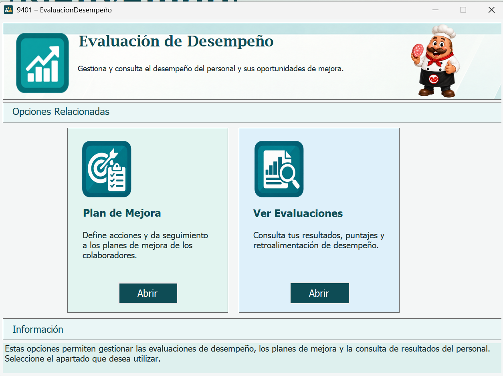
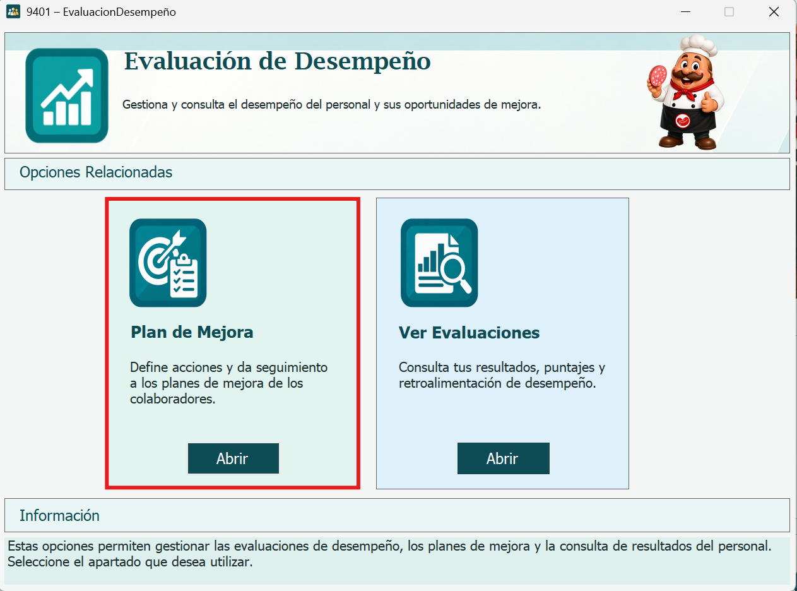
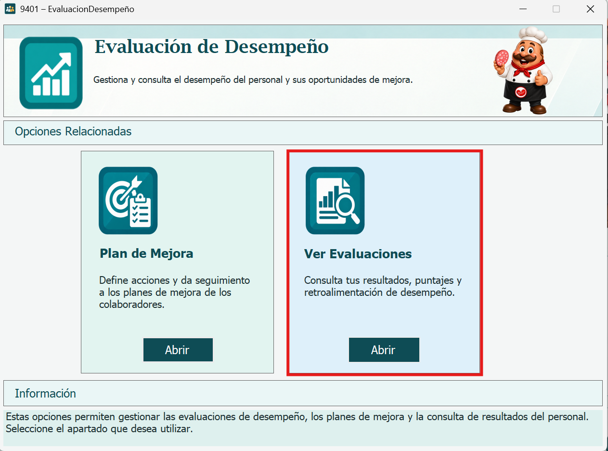

La ventana 9401 - Evaluación de Desempeño es el menú de opciones relacionadas con el desempeño del personal. Desde aquí se abren las ventanas de Plan de Mejora y Ver Evaluaciones.

En la tarjeta Plan de Mejora presione el botón Abrir. Se abre la ventana 9403 - Plan de Mejora, donde se registran los planes de mejora y se relacionan con la evaluación de desempeño de un empleado.

En la tarjeta Ver Evaluaciones presione el botón Abrir. Se abre la ventana 9404 - Ver Evaluaciones, donde el usuario que inició sesión consulta los resultados de sus evaluaciones de desempeño.

Cada ventana revisa los permisos del usuario al abrirse. Si el usuario no tiene acceso, se muestra un mensaje de acceso denegado y la ventana se cierra.